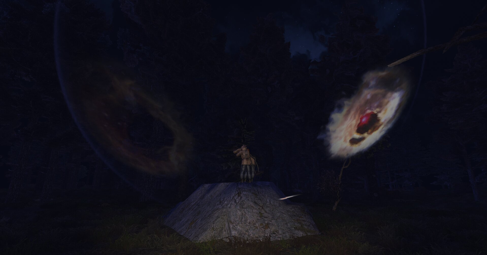
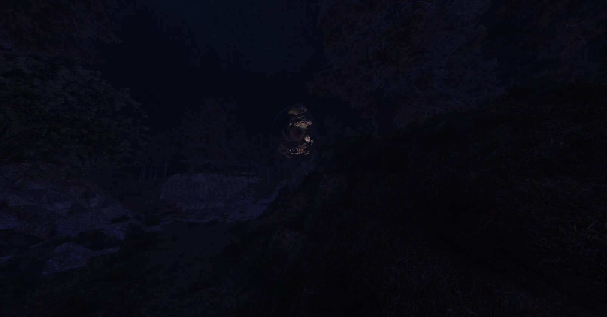
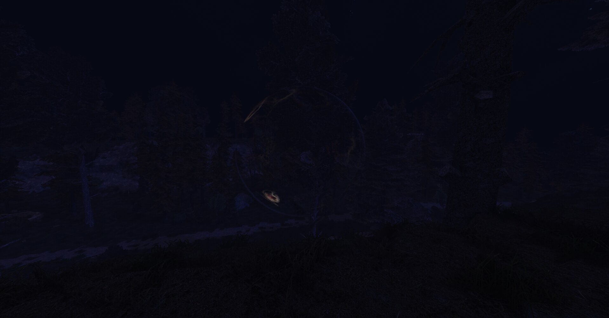
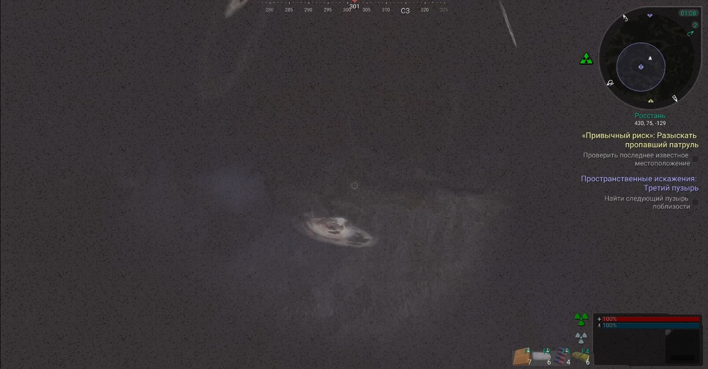
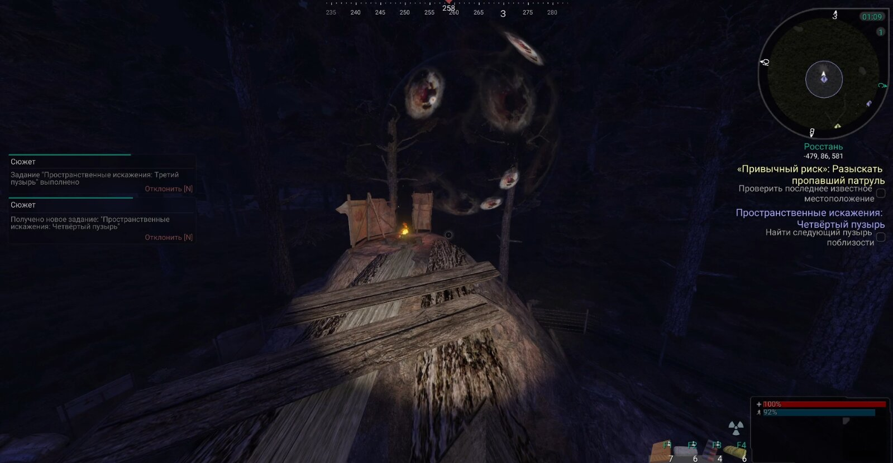
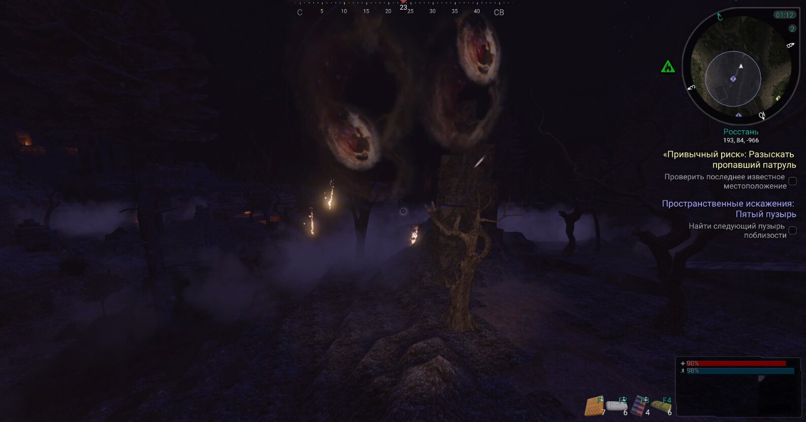
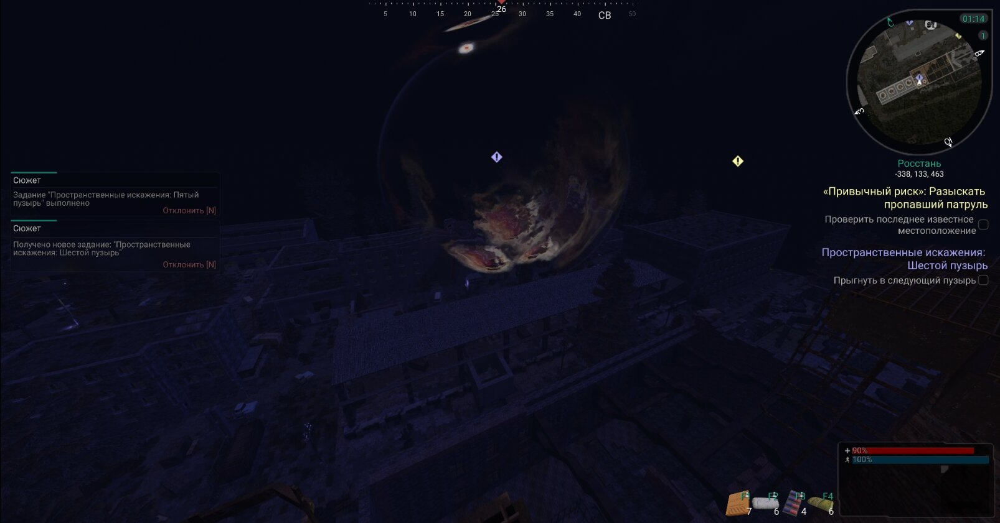
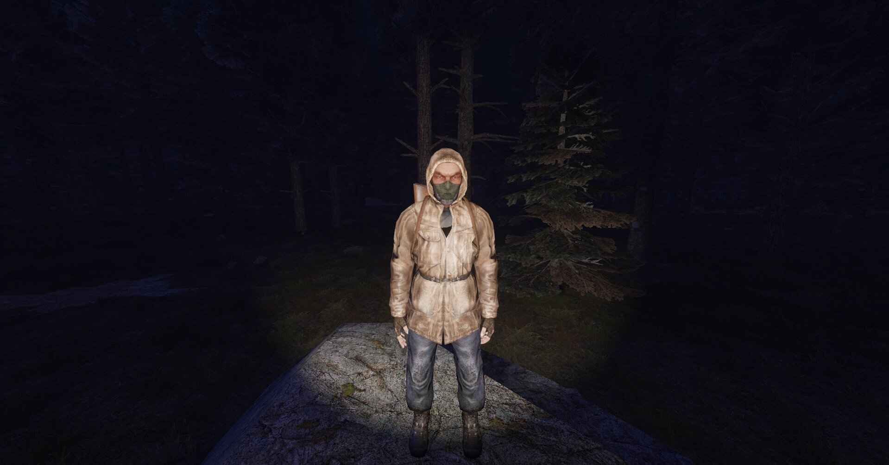

Застрявший в пространстве
Цепочка пространственных пузырей на Росстани: доберитесь до Лёхи Стрижа и выберитесь обратно.
[ −62 83 −459 ]
Введение
На Росстани сталкер попал в цепочку пространственных пузырей. Чтобы добраться до него и выбраться наружу, нужно последовательно прыгать из одного пузыря в другой.
Требования
- Иметь при себе любой детектор
Этапы квеста
-
Застрявший в пространстве
Добраться до сталкера
Продолжайте цепочку диалога до появления новой задачи.
-
Пространственные искажения
Найти другой пузырь поблизости
От основного пузыря идите на северо-запад. На краю склона увидите нужный пузырь — прыгните в него.

Пузырь на краю склона — точка входа
−99 88 −528 -
Пространственные искажения: второй пузырь
Найти следующий пузырь поблизости
Как только появитесь в новом месте, снова двигайтесь на северо-запад — там найдёте второй пузырь.

Второй пузырь после перехода
882 93 −984 -
Пространственные искажения: третий пузырь
Найти следующий пузырь поблизости
Вас переместит в радиационное поле. Чтобы не набрать слишком много радиации, сразу бегите на север — там будет третий пузырь.

Выход из радиационного поля — третий пузырь
430 75 −129 -
Пространственные искажения: четвёртый пузырь
Найти следующий пузырь поблизости
Как только появитесь, сразу бегите по деревяшкам направо в следующий пузырь, иначе придётся иметь дело с толпой пси-собак.

Деревянный мосток и пузырь справа
−485 86 583 -
Пространственные искажения: пятый пузырь
Найти следующий пузырь поблизости
Как только появитесь, сначала осмотритесь. Нужно пропаркурить по каменным столбам до самого конца — там увидите следующий пузырь.

Каменные столбы — маршрут к пузырю
194 85 −969 -
Пространственные искажения: шестой пузырь
Прыгнуть в следующий пузырь
Последний пузырь: появившись на ходовой площадке дымоотвода, развернитесь на 180° и идите к пузырю. Он отмечен на миникарте.

Площадка дымоотвода и финальный пузырь
−336 134 459 -
Пространственные искажения: седьмой пузырь
Поговорить со сталкером
Вас переместит прямиком к сталкеру — Лёхе Стрижу. Поговорите с ним.

Лёха Стриж в ловушке пространства
-
В поисках выхода
Найти выход
Повернитесь к пузырю, в котором находитесь, и взаимодействуйте с ним.
-
Как эта штука работает?
Поговорить со сталкером
Получив квестовый артефакт «Компас», снова поговорите с Лёхой Стрижом.
-
Глоток свободы
Поговорить со сталкером
Закончите диалог и получите награду за квест.
Награда
-
Медуза ×1
-
Индивидуальная аптечка ×4
-
Консервы «Завтрак туриста» ×6